# installing package, if not yet available
# install.packages("statforbiology")
# loading package
library(statforbiology)Usually, the first step of every nonlinear regression analysis is to select the function \(f\), which best describes the phenomenon under study. The next step is to fit this function to the observed data, possibly by using some sort of nonlinear least squares algorithms.
In relation to the first task, we have devoted a post to it, which you can find at https://www.statforbiology.com/posts/nls_usefulequations.
In relation to the second step, the main problem is that nonlinear least squares algorithms are iterative, in the sense that they start from some initial values of model parameters and repeat a sequence of operations, which continuously improve the initial guesses, until the least squares solution is approximately reached. Quite often, providing initial values for all model parameters becomes a problem; if our guesses are not close enough to least squares estimates, the algorithm may freeze during the estimation process and may not reach convergence. Unfortunately, guessing good initial values for model parameters is not always easy, especially for students and practitioners. This is where self-starters come in handy.
Self-starter functions can automatically calculate initial values for any given dataset and, therefore, they can make nonlinear regression analysis as smooth as linear regression analysis. From a teaching perspective, this means that the transition from linear to nonlinear models is immediate and hassle-free!
In another post (see here) I give detail on how self-starters can be built, both for the nls() function in the ‘stats’ package and for the drm() function in the ‘drc’ package (Ritz et al., 2019). In this post I would like to give an account on the self starting functions that already exist in R, in any of the available packages, such as ‘stat’, drc, ‘nlme’ and ‘nlraa’, as well as on ‘statforbiology’, which is the accompanying package for this blog.
First of all, we need to install (if necessary) and load these packages, by using the code below.
Functions and curve shapes
As in other posts, I have classified linear/nonlinear regression functions according to the shape they show when they are plotted in an x-y graph, following the approach taken in Ratkowsky (1990):
- Polynomials
- Concave/Convex curves (no inflection)
- Sigmoidal curves
- Curves with maxima/minima
To make navigation easier, you can first inspect Figure 1 to identify the type of curve of interest and then use the links above to jump directly to the corresponding section.
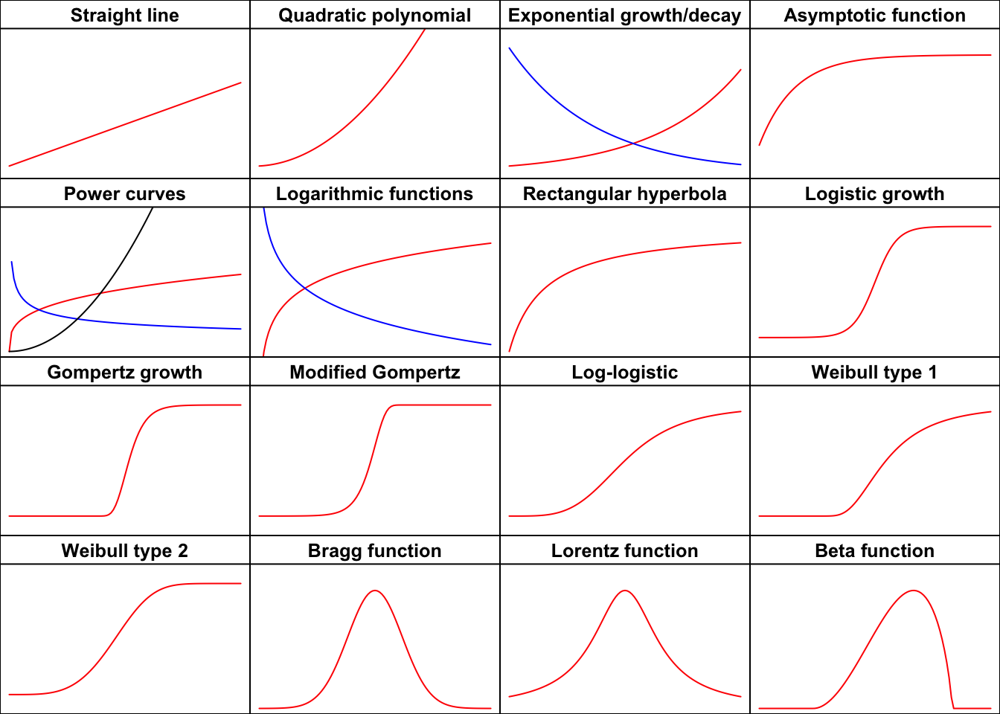
Polynomials
Straight line function
The equation is:
\[Y = b_0 + b_1 \, X \quad \quad \quad (1)\]
where \(b_0\) is the value of \(Y\) when \(X = 0\), \(b_1\) is the slope, i.e. the increase/decrease in \(Y\) for a unit-increase in \(X\). In R, linear regression is fitted by using ‘lm()’; however, in a couple of cases, I found myself in the need of fitting a polynomial by using nonlinear regression algorithms, although it needs to be clarly stated that this is rather inefficient (as a partial excuse, I should say that some methods for ‘drc’ objects are rather handy also for linear regression, e.g. to compare regression curves in ANCOVA models). For these unusual cases, we can use the NLS.linear() and DRC.linear() functions, in the ‘statforbiology’ package.
Example 1
Let’s consider the ‘metamitron’ dataset, which is available in ‘statforbiology’ and describes the degradation of the sugarbeet herbicide metamitron (M) in soil, either alone or in the presence of two co-applied herbicides, i.e. phenmedipham (P) and chloridazon (C). Independent soil samples treated with the four herbicide combinations (i.e. M, MP, MC and MPC) were assayed in eight different times (0, 7, 14, 21, 32, 42, 55 and 67 days after treatment, with three replicates per date) to determine the residual concentration of metamitron. In my book (Onofri, 2026; page 212) I have analysed this dataset by using linear regression, while, in this case, I would like to give an account of how the same model can be fitted with the drm() function in the ‘drc’ package, obtaining the slopes and intercepts for all combinations directly as the output of the summary() method.
# Example of fitting four straight lines at once
library(statforbiology)
dataset <- getAgroData("metamitron")
model <- drm(log(Conc) ~ Time, fct = DRC.linear(),
curveid = Herbicide, data = dataset)
summary(model)
Model fitted: Straight line (2 parms)
Parameter estimates:
Estimate Std. Error t-value p-value
a:M 4.5159111 0.0577603 78.184 < 2.2e-16 ***
a:MP 4.6304853 0.0577603 80.167 < 2.2e-16 ***
a:MC 4.5401707 0.0577603 78.604 < 2.2e-16 ***
a:MPC 4.7546974 0.0577603 82.318 < 2.2e-16 ***
b:M -0.0386165 0.0015585 -24.777 < 2.2e-16 ***
b:MP -0.0318908 0.0015585 -20.462 < 2.2e-16 ***
b:MC -0.0231879 0.0015585 -14.878 < 2.2e-16 ***
b:MPC -0.0234014 0.0015585 -15.015 < 2.2e-16 ***
---
Signif. codes: 0 '***' 0.001 '**' 0.01 '*' 0.05 '.' 0.1 ' ' 1
Residual standard error:
0.1687429 (88 degrees of freedom)Quadratic polynomial function
The equation is:
\[Y = a + b\, X + c \, X^2 \quad \quad \quad (2)\]
where \(b_0\) is the value of \(Y\) when \(X = 0\), while \(b_1\) and \(b_2\) relate to the shape of the parabola and to the abscissa of its maximum/minimum value \(X_m = - b_1 / 2 b_2\). In the same vein of the straight line function, a second order polynomial can be fitted with the lm() function. If necessary, it can also be fitted with nls() or drm(), by using the functions NLS.poly2(), and DRC.poly2().
Example 2
The dataset ‘waterProductivity’ shows the relationship between water productivity in lattuce, as affected by irrigation regime, as determined on a simulated experiment, shaped after Toscano et al (2026). It is expected that the relationship under study might show a maximum value, at an intermediate irrigation regime, which is confirmed by fitting a second order polynomial function. This same analysis could be more efficiently performed by using linear regression.
library(statforbiology)
dataset <- getAgroData("waterProductivity")
# nls fit
model <- nls(WP ~ NLS.poly2(Regime, a, b, c),
data = dataset)
#drc fit
model <- drm(WP ~ Regime, fct = DRC.poly2(),
data = dataset)
summary(model)
Model fitted: Second Order Polynomial (3 parms)
Parameter estimates:
Estimate Std. Error t-value p-value
a:(Intercept) 1.9187e+00 2.3171e-01 8.2806 1.679e-05 ***
b:(Intercept) 4.2977e-01 8.4554e-03 50.8287 2.217e-12 ***
c:(Intercept) -3.3618e-03 6.6586e-05 -50.4884 2.355e-12 ***
---
Signif. codes: 0 '***' 0.001 '**' 0.01 '*' 0.05 '.' 0.1 ' ' 1
Residual standard error:
0.1441625 (9 degrees of freedom)plot(model, log = "", main = "2nd order polynomial",
xlab = "Irrigation Regime (% of WC)", ylab = "Water Productivity")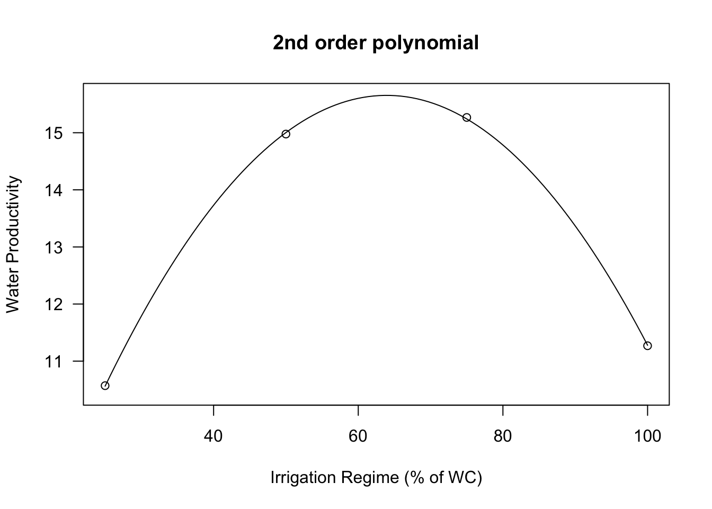
Concave/Convex curves
Exponential function
The most common equations are:
\[ Y = a e^{k X} \quad \quad \quad (3) \]
\[ Y = e^{d + k X} \quad \quad \quad (4)\] \[Y = a \, b^X \quad \quad \quad (5)\]
\[ Y = d \exp(-x/e) \quad \quad \quad (6)\]
and, for the cases where a lower asymptote \(c \neq 0\) is needed:
\[ Y = c + (d -c) \exp(-x/e) \quad \quad \quad (7)\]
Several self-starting functions are available: in the package statforbiology you can find NLS.expoGrowth(), NLS.expoDecay(), DRC.expoGrowth() and DRC.expoDecay(), which can be used to fit the Equation 3, respectively with ‘nls()’ and ‘drm()’. The ‘drc’ package also contains the functions EXD.2() and EXD.3(), which can be used to fit, respectively, the Equations 6 and 7.
Example 3
The ‘degradation’ data, which are available in the ‘statforbiology’ package refer to an herbicide degradation experiment, where it is supposed that the drop in concentration over time should follow a first order kinetics, according to an exponential decay function.
library(statforbiology)
data(degradation)
# nls fit
model <- nls(Conc ~ NLS.expoDecay(Time, a, k),
data = degradation)
# drm fit
model <- drm(Conc ~ Time, fct = DRC.expoDecay(),
data = degradation)
summary(model)
Model fitted: Exponential Decay Model (2 parms)
Parameter estimates:
Estimate Std. Error t-value p-value
C0:(Intercept) 99.6349312 1.4646680 68.026 < 2.2e-16 ***
k:(Intercept) 0.0670391 0.0019089 35.120 < 2.2e-16 ***
---
Signif. codes: 0 '***' 0.001 '**' 0.01 '*' 0.05 '.' 0.1 ' ' 1
Residual standard error:
2.621386 (22 degrees of freedom)plot(model, log = "", main = "Exponential decay", ylim = c(0, 110),
xlab = "Time (days)", ylab = "Concentration (ng/g)")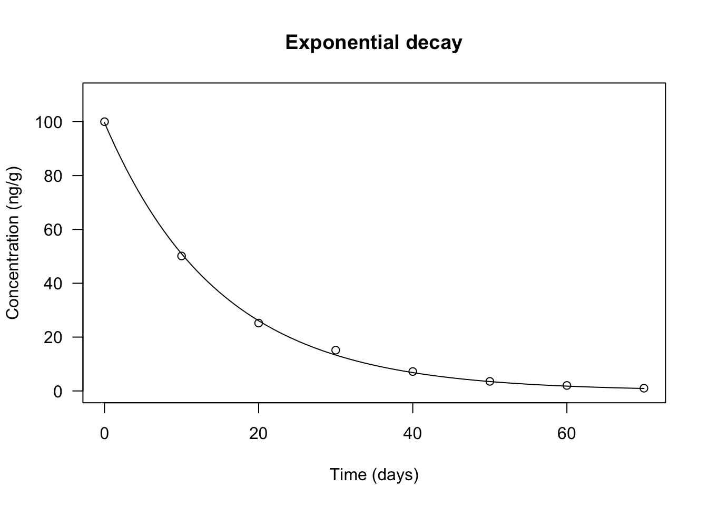
Asymptotic function
The following parameterisations are available:
\[Y = a - (a - b) \, \exp (- m X) \quad \quad \quad (8)\]
\[Y = c + (d - c) \, \left[1 - \exp \left(- \frac{X}{e} \right) \right] \quad \quad \quad (9)\]
\[Y = a - (a - b) \, \exp (- log(f) X) \quad \quad \quad (10)\]
If we \(b = 0\) (or equivalently \(c = 0\)) in the previous curves we obtain a curve passing through the origin, which is usually named the negative exponential function and it is most commonly parameterised as:
\[Y = a \left[ 1- \exp (- m X) \right] \quad \quad \quad (11)\]
In order to fit the asymptotic function, the ‘statforbiology’ package contains the self-starting routines NLS.asymReg() and DRC.asymReg(), which can be used to fit Eq. 8, respectively, with nls() and drm(). The ‘drc’ package contains the function AR.3() to fit Eq. 9 with ‘drm()’, while the ‘nlme’ package contains SSasymp() that provides Eq. 10, to be fitted with nls(). The negative exponential function can be fitted with NLS.negExp(), DRC.negExp(), AR.2() and SSasympOrig().
Example 4
In this case we consider a growth curve with where the weight of a crop is measured in different times. The data do not show any visible inflection point and, therefore, an asymptotic regression model is fitted to them.
Time <- c(1, 3, 5, 7, 9, 11, 13, 20)
Weight <- c(8.22, 14.0, 17.2, 16.9, 19.2, 19.6, 19.4, 19.6)
# nls fit
model <- nls(Weight ~ NLS.asymReg(Time, b, m, a) )
# drm fit
model <- drm(Weight ~ Time, fct = DRC.asymReg(names = c("b", "m", "a")))
summary(model)
Model fitted: Asymptotic Regression Model (3 parms)
Parameter estimates:
Estimate Std. Error t-value p-value
b:(Intercept) 3.756123 1.367835 2.7460 0.040500 *
m:(Intercept) 0.337078 0.052704 6.3957 0.001385 **
a:(Intercept) 19.629817 0.420557 46.6758 8.525e-08 ***
---
Signif. codes: 0 '***' 0.001 '**' 0.01 '*' 0.05 '.' 0.1 ' ' 1
Residual standard error:
0.639656 (5 degrees of freedom)plot(model, log="", main = "Asymptotic regression",
ylim = c(0,25), xlim = c(0,20))
Power function
The most common parameterisation is:
\[Y = a \, X^b \quad \quad \quad (12)\] and it is available as the DRC.powerCurve() and NLS.powerCurve() functions in the ‘statforbiology’ package.
Example 5
The ‘speciesArea’ dataset in ‘statforbiology’ was obtained in an experiment aimed at determining the species-area relationship for the weed community in an orange grove. The response is the number of species, while the predictor is the surface of sampled area.
library(statforbiology)
speciesArea <- getAgroData("speciesArea")
#nls fit
model <- nls(numSpecies ~ NLS.powerCurve(Area, a, b),
data = speciesArea)
# drm fit
model <- drm(numSpecies ~ Area, fct = DRC.powerCurve(),
data = speciesArea)
summary(model)
Model fitted: Power curve (Freundlich equation) (2 parms)
Parameter estimates:
Estimate Std. Error t-value p-value
a:(Intercept) 4.348404 0.337197 12.896 3.917e-06 ***
b:(Intercept) 0.329770 0.016723 19.719 2.155e-07 ***
---
Signif. codes: 0 '***' 0.001 '**' 0.01 '*' 0.05 '.' 0.1 ' ' 1
Residual standard error:
0.9588598 (7 degrees of freedom)plot(model, log="", main = "Power curve",
ylab = "Number of weed species", xlab = "Sampled area (m2)")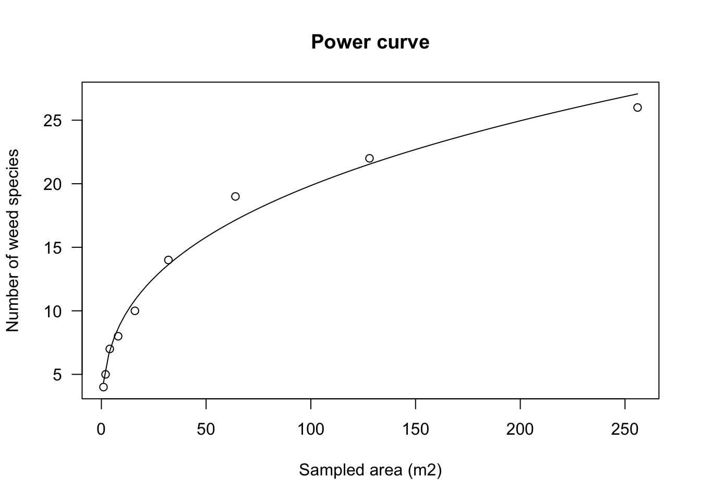
Logarithmic function
This is indeed a linear model on log-transformed \(X\):
\[y = a + b \, \log(X) \quad \quad \quad (10)\]
Due to the logarithmic function, it must be \(X > 0\). The parameter \(b\) dictates the shape: if \(b > 0\), the curve is convex up and \(Y\) increases as \(X\) increases. If \(b < 0\), the curve is concave up and \(Y\) decreases as \(X\) increases, as shown in Figure 1 above.
The logarithmic equation can be fit by using ‘lm()’. If necessary, it can also be fit by using ‘nls()’ and ‘drm()’: the self-starting functions NLS.logCurve() and DRC.logCurve() are available within the ‘statforbiology’ package. We show an example of their usage in the box below.
X <- c(1,2,4,5,7,12)
Y <- c(1.97, 2.32, 2.67, 2.71, 2.86, 3.09)
# lm fit
model <- lm(Y ~ log(X) )
# nls fit
model <- nls(Y ~ NLS.logCurve(X, a, b) )
# drm fit
model <- drm(Y ~ X, fct = DRC.logCurve() )Rectangular hyperbola
This function is also known as the Michaelis-Menten function and it is often parameterised as:
\[Y = \frac{a \, X} {b + X} \quad \quad \quad (11)\]
The curve is convex up and \(Y\) increases as \(X\) increases, up to a plateau level. The parameter \(a\) represents the higher asymptote (for \(X \rightarrow \infty\)), while \(b\) is the X value giving a response equal to \(a/2\). Indeed, it is easily shown that:
\[\frac{a}{2} = \frac{a\,X_{50} } {b + X_{50} } \]
which leads to \(b = x_{50}\).
The slope (first derivative) is:
D(expression( (a*X) / (b + X) ), "X")a/(b + X) - (a * X)/(b + X)^2From there, we can see that the initial slope (at \(X = 0\)) is $i = a/b $. The equation 11 is not defined for \(X = b\) and it makes no biological sense for \(X < b\).
An alternative parameterisation is obtained considering that:
\[Y = \frac{a \, X} {b + X} = \frac{a}{ \frac{b}{X} + \frac{X}{X}} = \frac{a}{1 + \frac{b}{X}} \quad \quad \quad (12)\]
This parameterisation is sometimes used in bioassays and it is parameterised with \(d = a\) and \(e = b\). From a strict mathematical point of view, the equation 12 is not defined for \(X = 0\), although it approaches 0 when \(X \rightarrow 0\).
The Michaelis-Menten function is used in pesticide chemistry, enzyme kinetics and in weed competition studies, to model yield losses as a function of weed density. In R, this model can be fit by using ‘nls()’ and the self-starting functions SSmicmen(), within the package ‘nlme’. If you prefer a ‘drm()’ fit, you can use the MM.2() function in the ‘drc’ package, which uses the parameterisation in Equation 12.
X <- c(0, 5, 7, 22, 28, 39, 46, 200)
Y <- c(12.74, 13.66, 14.11, 14.43, 14.78, 14.86, 14.78, 14.91)
#drm fit
model <- drm(Y ~ X, fct = MM.2())
summary(model)
Model fitted: Michaelis-Menten (2 parms)
Parameter estimates:
Estimate Std. Error t-value p-value
d:(Intercept) 14.93974 2.86695 5.2110 0.001993 **
e:(Intercept) 0.45439 2.24339 0.2025 0.846183
---
Signif. codes: 0 '***' 0.001 '**' 0.01 '*' 0.05 '.' 0.1 ' ' 1
Residual standard error:
5.202137 (6 degrees of freedom)plot(model, log = "", main = "Michaelis-Menten function",
ylim = c(12, 15))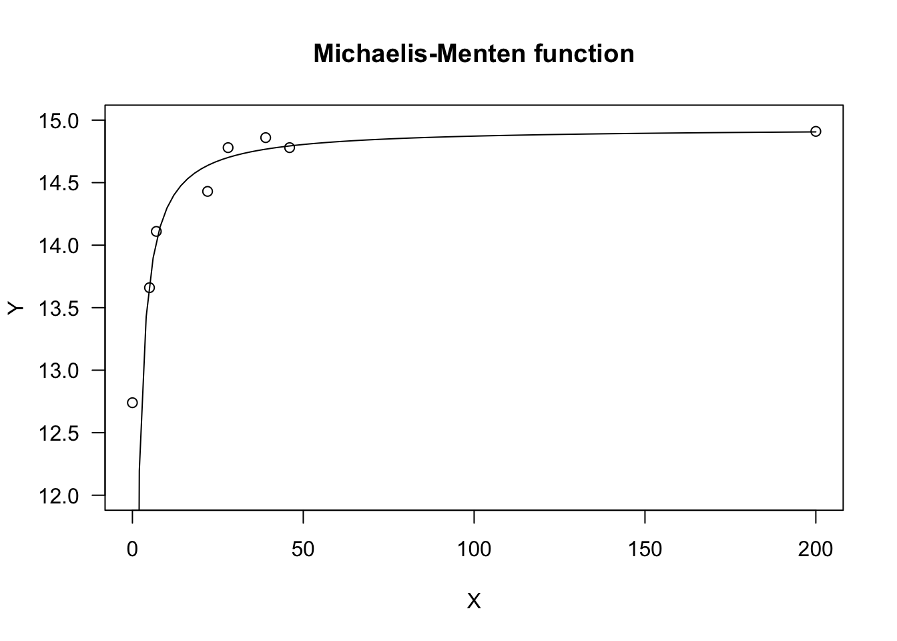
Sigmoidal curves
Sigmoidal curves are S-shaped and they may be increasing, decreasing, symmetric or non-symmetric around the inflection point. They are parameterised in countless ways, which may often be confusing. I will show some widespread parameterisations, that are very useful for bioassays or growth studies. All curves can be turned from increasing to decreasing (and vice-versa) by reversing the sign of the \(b\) parameter.
Logistic function
The logistic curve derives from the cumulative logistic distribution function; the curve is symmetric around the inflection point and it may be parameterised as:
\[Y = c + \frac{d - c}{1 + exp(- b (X - e))} \quad \quad \quad (13)\]
where \(d\) is the higher asymptote, \(c\) is the lower asymptote, \(e\) is \(X\) value at the inflection point, while \(b\) is the slope at the inflection point. As the curve is symmetric, \(e\) represents also the \(X\) value producing a response half-way between \(d\) and \(c\) (usually known as the ED50, in biological assay). The parameter \(b\) can be positive or negative and, consequently, \(Y\) may increase or decrease as \(X\) increases.
The above function is known as the four-parameter logistic. If necessary, constraints can be put on parameter values, i.e. \(c\) can be constrained to 0 (three-parameter logistic) and, additionally, \(d\) can be constrained to 1 (two-parameter logistic).
In the ‘statforbiology’ package, the three logistic curves (four-, three- and two-parameters) are available as NLS.L4(), NLS.L3() and NLS.L2(), respectively. With ‘drm()’, we can use the self-starting functions L.4() and L.3() in the package ‘drc’, while the DRC.L2() function for the two-parameter logistic has been included in the ‘statforbiology’ package. The only difference between the self-starters for ‘drm()’ and the self-starters for ‘nls()’ is that, in the former, the sign for the \(b\) parameter is reversed, i.e. it is negative for increasing curves and positive for decreasing curves.
The four- and three-parameter logistic curves can also be fit with ‘nls()’, respectively with the self-starting functions SSfpl() and SSlogis(), in the ‘nlme’ package. In these functions, \(b\) is replaced by \(scal = -1/b\).
In the box below, I show an example, regarding the growth of a sugar-beet crop.
data(beetGrowth)
# nls fit
model <- nls(weightInf ~ NLS.L3(DAE, b, d, e), data = beetGrowth)
model.2 <- nls(weightInf ~ NLS.L4(DAE, b, c, d, e), data = beetGrowth)
model.3 <- nls(weightInf/max(weightInf) ~ NLS.L2(DAE, b, e), data = beetGrowth)
# drm fit
model <- drm(weightInf ~ DAE, fct = L.3(), data = beetGrowth)
model.2 <- drm(weightInf ~ DAE, fct = L.4(), data = beetGrowth)
model.3 <- drm(weightInf/max(weightInf) ~ DAE, fct = DRC.L2(), data = beetGrowth)
summary(model)
Model fitted: Logistic (ED50 as parameter) with lower limit fixed at 0 (3 parms)
Parameter estimates:
Estimate Std. Error t-value p-value
b:(Intercept) -0.118771 0.018319 -6.4835 1.032e-05 ***
d:(Intercept) 25.118357 1.279417 19.6327 4.127e-12 ***
e:(Intercept) 58.029764 1.834414 31.6340 3.786e-15 ***
---
Signif. codes: 0 '***' 0.001 '**' 0.01 '*' 0.05 '.' 0.1 ' ' 1
Residual standard error:
2.219389 (15 degrees of freedom)plot(model, log="", main = "Logistic function")
Gompertz function
The Gompertz curve is parameterised in very many ways. I tend to prefer a parameterisation that resembles the one used for the logistic function:
\[ Y = c + (d - c) \exp \left\{- \exp \left[ - b \, (X - e) \right] \right\} \quad \quad \quad (14)\]
The difference between the logistic and Gompertz functions is that this latter is not symmetric around the inflection point: it shows a longer lag at the beginning, but raises steadily afterwards. The parameters have the same meaning as those in the logistic function, apart from the fact that \(e\), i.e. the abscissa of the inflection point, does not give a response half-way between \(c\) and \(d\). As for the logistic, we can have four-, three- and two-parameter Gompertz functions, which can be used to describe plant growth or several other biological processes.
In R, the Gompertz equation can be fit by using ‘drm()’ and, respectively the G.4(), G.3() and G.2() self-starters. With ‘nls’, the ‘statforbiology’ package contains the corresponding functions NLS.G4(), NLS.G3() and NLS.G2(). As for the logistic, the only difference between the self starters for ‘drm()’ and the self starters for ‘nls()’ is that, in the former, the sign for the \(b\) parameter is reversed, i.e. it is negative for increasing curves and positive for decreasing curves.
The three-parameter Gompertz can also be fit with ‘nls()’, by using the SSGompertz() self-starter in the ‘nlme’ package, although this is a different parameterisation.
# nls fit
model <- nls(weightFree ~ NLS.G3(DAE, b, d, e), data = beetGrowth)
model.2 <- nls(weightFree ~ NLS.G4(DAE, b, c, d, e), data = beetGrowth)
model.3 <- nls(weightFree/max(weightFree) ~ NLS.G2(DAE, b, e), data = beetGrowth)
# drm fit
model <- drm(weightFree ~ DAE, fct = G.3(), data = beetGrowth)
model.2 <- drm(weightFree ~ DAE, fct = G.4(), data = beetGrowth)
model.3 <- drm(weightFree/max(weightFree) ~ DAE, fct = G.2(), data = beetGrowth)
summary(model)
Model fitted: Gompertz with lower limit at 0 (3 parms)
Parameter estimates:
Estimate Std. Error t-value p-value
b:(Intercept) -0.122255 0.029938 -4.0836 0.0009783 ***
d:(Intercept) 35.078529 1.668665 21.0219 1.531e-12 ***
e:(Intercept) 49.008075 1.165191 42.0601 < 2.2e-16 ***
---
Signif. codes: 0 '***' 0.001 '**' 0.01 '*' 0.05 '.' 0.1 ' ' 1
Residual standard error:
2.995873 (15 degrees of freedom)plot(model, log="", main = "Gompertz function")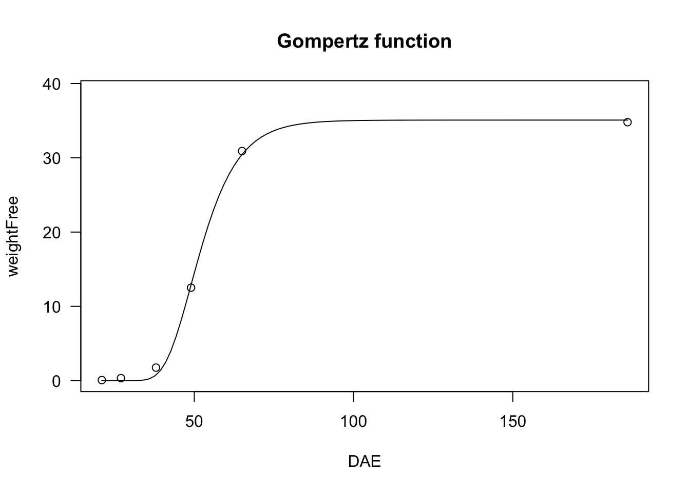
Modified Gompertz function
We have seen that the logistic curve is symmetric around the inflection point, while the Gompertz shows a longer lag at the beginning and raises steadily afterwards. We can describe a different pattern by modifying the Gompertz function as follows:
\[ Y = c + (d - c) \left\{ 1 - \exp \left\{- \exp \left[ b \, (X - e) \right] \right\} \right\} \quad \quad \quad (15)\]
The resulting curve increases steadily at the beginning, but slows down later on. Also for this function, we can put constraints on \(d = 1\) and/or \(c = 0\), so that we have four-parameter, three-parameter and two-parameter modified Gompertz equations; these models can be fit by using ‘nls()’ and the self starters NLS.E4(), NLS.E3() and NLS.E2() in the ‘statforbiology’ package. Likewise, the modified Gompertz equations can be fit with ‘drm()’ and the self starters DRC.E4(), DRC.E3() and DRC.E2(), also available in the ‘statforbiology’ package
# nls fit
model <- nls(weightInf ~ NLS.E3(DAE, b, d, e), data = beetGrowth)
model.2 <- nls(weightFree ~ NLS.E4(DAE, b, c, d, e), data = beetGrowth)
model.3 <- nls(I(weightFree/max(weightFree)) ~ NLS.E2(DAE, b, e), data = beetGrowth)
# drm fit
model <- drm(weightInf ~ DAE, fct = DRC.E3(), data = beetGrowth)
model.2 <- drm(weightFree ~ DAE, fct = DRC.E4(), data = beetGrowth)
model.3 <- drm(weightFree/max(weightFree) ~ DAE, fct = DRC.E2(), data = beetGrowth)
summary(model)
Model fitted: Modified Gompertz equation (3 parameters) (3 parms)
Parameter estimates:
Estimate Std. Error t-value p-value
b:(Intercept) 0.092508 0.013231 6.9917 4.340e-06 ***
d:(Intercept) 25.107004 1.304379 19.2482 5.493e-12 ***
e:(Intercept) 63.004111 1.747087 36.0624 4.945e-16 ***
---
Signif. codes: 0 '***' 0.001 '**' 0.01 '*' 0.05 '.' 0.1 ' ' 1
Residual standard error:
2.253878 (15 degrees of freedom)plot(model, log="", main = "Modified Gompertz")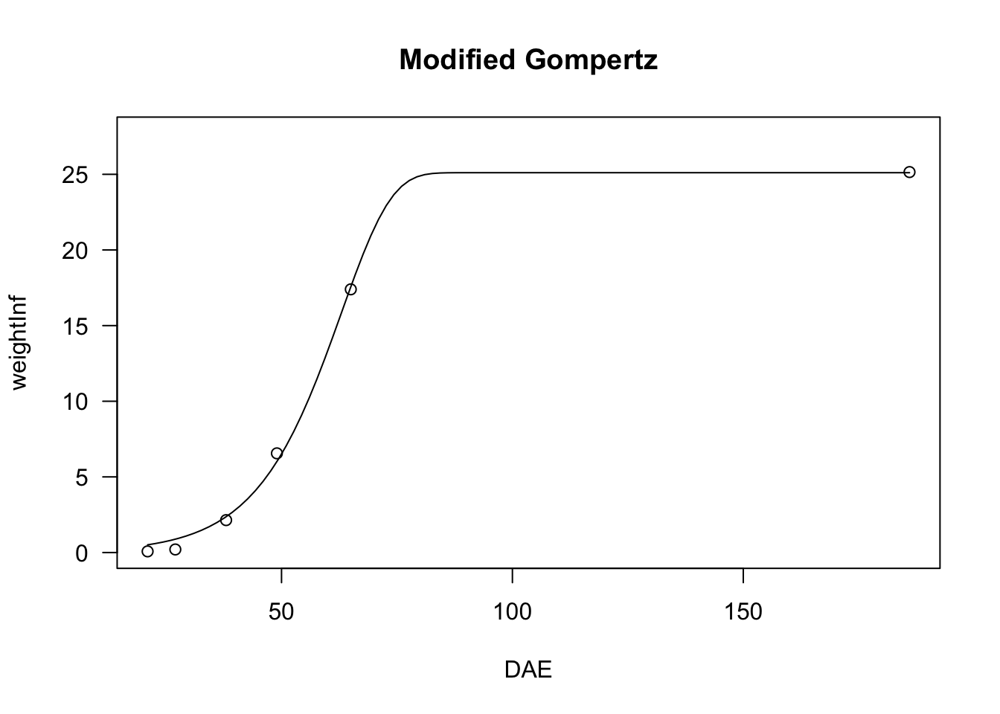
Log-logistic function
The log-logistic curve is symmetric on the logarithm of \(X\) (a log-normal curve would be practically equivalent, but it is used far less often). For example, in biologic assays (but also in germination assays), the log-logistic curve is defined as follows:
\[Y = c + \frac{d - c}{1 + \exp \left\{ - b \left[ \log(X) - \log(e) \right] \right\} } \quad \quad \quad (16)\]
The parameters have the same meaning as the logistic equation given above. In particular, \(e\) represents the X-level which gives a response half-way between \(c\) and \(d\) (ED50). It is easy to see that the above equation is equivalent to:
\[Y = c + \frac{d - c}{1 + \left( \frac{X}{e} \right)^{-b}}\]
Log-logistic functions are used for crop growth, seed germination and bioassay work and they can have the same constraints as the logistic function (four- three- and two-parameter log-logistic). They can be fit by ‘drm()’ and the self starters LL.4() (four-parameter log-logistic), LL.3() (three-parameter log-logistic, with \(c = 0\)) and LL.2() (two-parameter log-logistic, with \(d = 1\) and \(c = 0\)), as available in the ‘drc’ package. With respect to Equation 16, in these self-starters the sign for \(b\) is reversed, i.e. it is negative for the increasing log-logistic curve and positive for the decreasing curve. In the package ‘statforbiology’, the corresponding self starters for ‘nls()’ are NLS.LL4(), NLS.LL3() and NLS.LL2(), which are all derived from Equation 15 (i.e. the sign of \(b\) is positive for increasing curves and negative for decreasing curves).
We show an example of a log-logistic fit, relating to a bioassay with Brassica rapa treated at increasing dosages of an herbicide.
brassica <- getAgroData("brassica")
model <- nls(FW ~ NLS.LL4(Dose, b, c, d, e), data = brassica)
model <- nls(FW ~ NLS.LL3(Dose, b, d, e), data = brassica)
model <- nls(FW/max(FW) ~ NLS.LL2(Dose, b, e), data = brassica)
model <- drm(FW ~ Dose, fct = LL.4(), data = brassica)
summary(model)
Model fitted: Log-logistic (ED50 as parameter) (4 parms)
Parameter estimates:
Estimate Std. Error t-value p-value
b:(Intercept) 1.45113 0.24113 6.0181 1.743e-06 ***
c:(Intercept) 0.34948 0.18580 1.8810 0.07041 .
d:(Intercept) 4.53636 0.20514 22.1140 < 2.2e-16 ***
e:(Intercept) 2.46557 0.35111 7.0221 1.228e-07 ***
---
Signif. codes: 0 '***' 0.001 '**' 0.01 '*' 0.05 '.' 0.1 ' ' 1
Residual standard error:
0.4067837 (28 degrees of freedom)plot(model, ylim = c(0,6), main = "Log-logistic function")
Weibull function (type 1)
The type 1 Weibull function corresponds to the Gompertz, but it is based on the logarithm of \(X\). The equation is as follows:
\[ Y = c + (d - c) \exp \left\{- \exp \left[ - b \, (\log(X) - \log(e)) \right] \right\} \quad \quad \quad (17)\]
The parameters have the same meaning as the other sigmoidal curves given above, apart from the fact that \(e\) is the abscissa of the inflection point, but it is not the ED50.
The four-parameters, three-parameters and two-parameters Weibull functions can be fit by using ‘drm()’ and the self-starters available within the ‘drc’ package, i.e. W1.4(), W1.3() and W1.2(). The ‘statforbiology’ package contains the corresponding self-starters NLS.W1.4(), NLS.W1.3() and NLS.W1.2(), which can be used with ‘nls()’.
data(brassica)Warning in data(brassica): data set 'brassica' not foundmodel <- nls(FW ~ NLS.W1.4(Dose, b, c, d, e), data = brassica)
model.2 <- nls(FW ~ NLS.W1.3(Dose, b, d, e), data = brassica)
model.3 <- nls(FW/max(FW) ~ NLS.W1.2(Dose, b, e), data = brassica)
model <- drm(FW ~ Dose, fct = W1.4(), data = brassica)
model.2 <- drm(FW ~ Dose, fct = W1.3(), data = brassica)
model.3 <- drm(FW/max(FW) ~ Dose, fct = W1.2(), data = brassica)
summary(model)
Model fitted: Weibull (type 1) (4 parms)
Parameter estimates:
Estimate Std. Error t-value p-value
b:(Intercept) 1.01252 0.15080 6.7143 2.740e-07 ***
c:(Intercept) 0.50418 0.14199 3.5507 0.001381 **
d:(Intercept) 4.56137 0.19846 22.9841 < 2.2e-16 ***
e:(Intercept) 3.55327 0.45039 7.8894 1.359e-08 ***
---
Signif. codes: 0 '***' 0.001 '**' 0.01 '*' 0.05 '.' 0.1 ' ' 1
Residual standard error:
0.3986775 (28 degrees of freedom)plot(model, ylim = c(0,6), main = "Weibull type 1")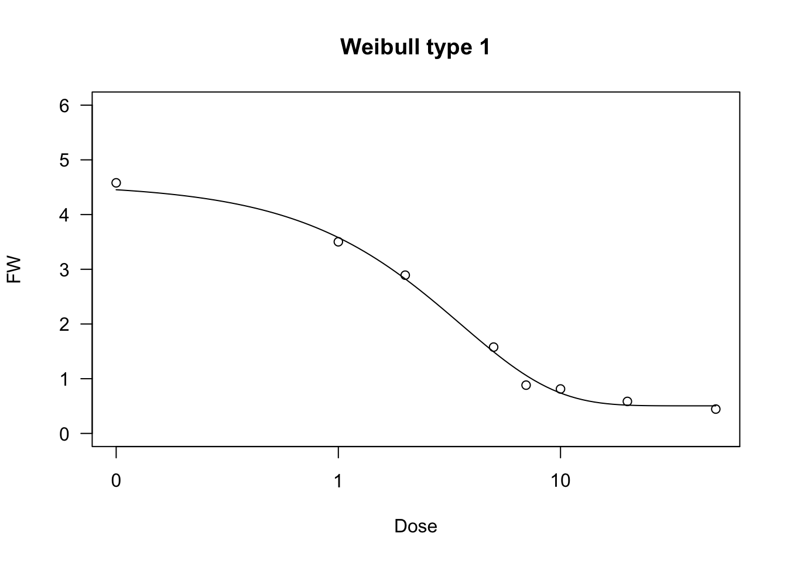
Weibull function (type 2)
The type 2 Weibull is similar to the type 1 Weibull, but describes a different type of asymmetry, corresponding to the modified Gompertz function above:
\[ Y = c + (d - c) \left\{ 1 - \exp \left\{- \exp \left[ b \, (\log(X) - \log(e)) \right] \right\} \right\} \quad \quad \quad (18)\]
As for fitting, the ‘drc’ package contains the self-starting functions W2.4(), W2.3() and W2.2(), which can be used with ‘drm()’ (be careful: the sign for \(b\) is reversed, with respect to Equation 18). The ‘statforbiology’ package contains the corresponding self-starters NLS.W2.4(), NLS.W2.3() and NLS.W2.2(), which can be used with ‘nls()’.
data(brassica)Warning in data(brassica): data set 'brassica' not foundmodel <- nls(FW ~ NLS.W2.4(Dose, b, c, d, e), data = brassica)
model.1 <- nls(FW ~ NLS.W2.3(Dose, b, d, e), data = brassica)
model.2 <- nls(FW/max(FW) ~ NLS.W2.2(Dose, b, e), data = brassica)
model <- drm(FW ~ Dose, fct = W2.4(), data = brassica)
summary(model)
Model fitted: Weibull (type 2) (4 parms)
Parameter estimates:
Estimate Std. Error t-value p-value
b:(Intercept) -0.96191 0.17684 -5.4395 8.353e-06 ***
c:(Intercept) 0.18068 0.25191 0.7173 0.4792
d:(Intercept) 4.53804 0.21576 21.0328 < 2.2e-16 ***
e:(Intercept) 1.66342 0.25240 6.5906 3.793e-07 ***
---
Signif. codes: 0 '***' 0.001 '**' 0.01 '*' 0.05 '.' 0.1 ' ' 1
Residual standard error:
0.4215551 (28 degrees of freedom)plot(model, ylim = c(0,6), main = "Weibull type 2")Curves with maxima/minima
It is sometimes necessary to describe phenomena where the \(Y\) variable reaches a maximum value at a certain level of the \(X\) variable, and drops afterwords. For example, growth or germination rates are higher at optimal temperature levels and lower at supra-optimal or sub-optimal temperature levels. Another example relates to bioassays: in some cases, low doses of toxic substances induce a stimulation of growth (hormesis), which needs to be described by an appropriate model. Let’s see some functions which may turn out useful in these circumstances.
Bragg function
This function is connected to the normal (Gaussian) distribution and has a symmetric shape with a maximum equal to \(d\), that is reached when \(X = e\) and two inflection points. In this model, \(b\) relates to the slope at the inflection points; the response \(Y\) approaches 0 when \(X\) approaches \(\pm \infty\):
\[ Y = d \, \exp \left[ - b (X - e)^2 \right] \quad \quad \quad (19)\]
If we would like to have lower asymptotes different from 0, we should add the parameter \(c\), as follows:
\[ Y = c + (d - c) \, \exp \left[ - b (X - e)^2 \right] \quad \quad \quad (20)\]
The two Bragg curves have been used in applications relating to the science of carbon materials. We can fit them with ‘drm()’, by using the self starters DRC.bragg.3() (Equation 19) and DRC.bragg.4 (Equation 20), in the ‘statforbiology’ package. With ‘nls()’, you can use the corresponding self-starters NLS.bragg.3() and NLS.bragg.4, also in the ‘statforbiology’ package.
X <- c(5, 10, 15, 20, 25, 30, 35, 40, 45, 50)
Y1 <- c(0.1, 2, 5.7, 9.3, 19.7, 28.4, 20.3, 6.6, 1.3, 0.1)
Y2 <- Y1 + 2
# nls fit
mod.nls <- nls(Y1 ~ NLS.bragg.3(X, b, d, e) )
mod.nls2 <- nls(Y2 ~ NLS.bragg.4(X, b, c, d, e) )
# drm fit
mod.drc <- drm(Y1 ~ X, fct = DRC.bragg.3() )
mod.drc2 <- drm(Y2 ~ X, fct = DRC.bragg.4() )
plot(mod.drc, ylim = c(0, 30), log = "")
plot(mod.drc2, add = T, col = "red")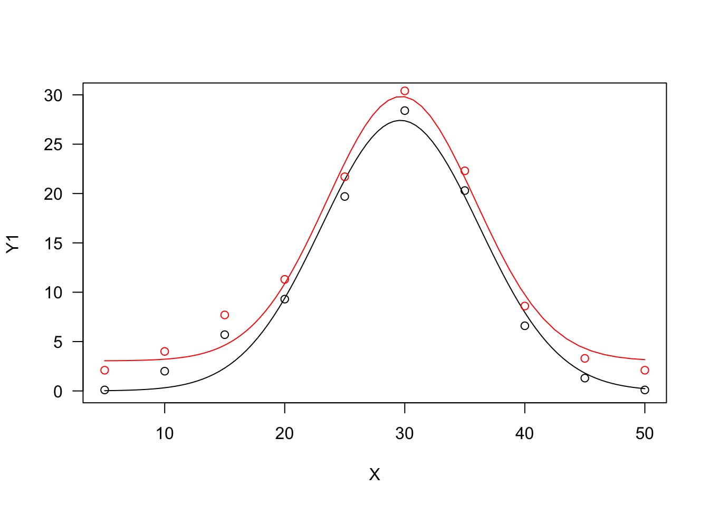
Lorentz function
The Lorentz function is similar to the Bragg function, although it has worse statistical properties (Ratkowsky, 1990). The equation is:
\[ Y = \frac{d} { 1 + b (X - e)^2 } \quad \quad \quad (21)\]
We can also allow for lower asymptotes different from 0, by adding a further parameter:
\[ Y = c + \frac{d - c} { 1 + b (X - e)^2 } \quad \quad \quad (22)\]
The two Lorentz functions can be fit with ‘drm()’, by using the self-starters DRC.lorentz.3() (Equation 21) and DRC.lorentz.4 (Equation 22), in the ‘statforbiology’ package. With ‘nls()’, you can use the corresponding self-starters NLS.lorentz.3() and NLS.lorentz.4, also in the ‘statforbiology’ package.
X <- c(5, 10, 15, 20, 25, 30, 35, 40, 45, 50)
Y1 <- c(0.1, 2, 5.7, 9.3, 19.7, 28.4, 20.3, 6.6, 1.3, 0.1)
Y2 <- Y1 + 2
# nls fit
mod.nls <- nls(Y1 ~ NLS.lorentz.3(X, b, d, e) )
mod.nls2 <- nls(Y2 ~ NLS.lorentz.4(X, b, c, d, e) )
# drm fit
mod.drc <- drm(Y1 ~ X, fct = DRC.lorentz.3() )
mod.drc2 <- drm(Y2 ~ X, fct = DRC.lorentz.4() )
plot(mod.drc, ylim = c(0, 30), log = "")
plot(mod.drc2, add = T, col = "red")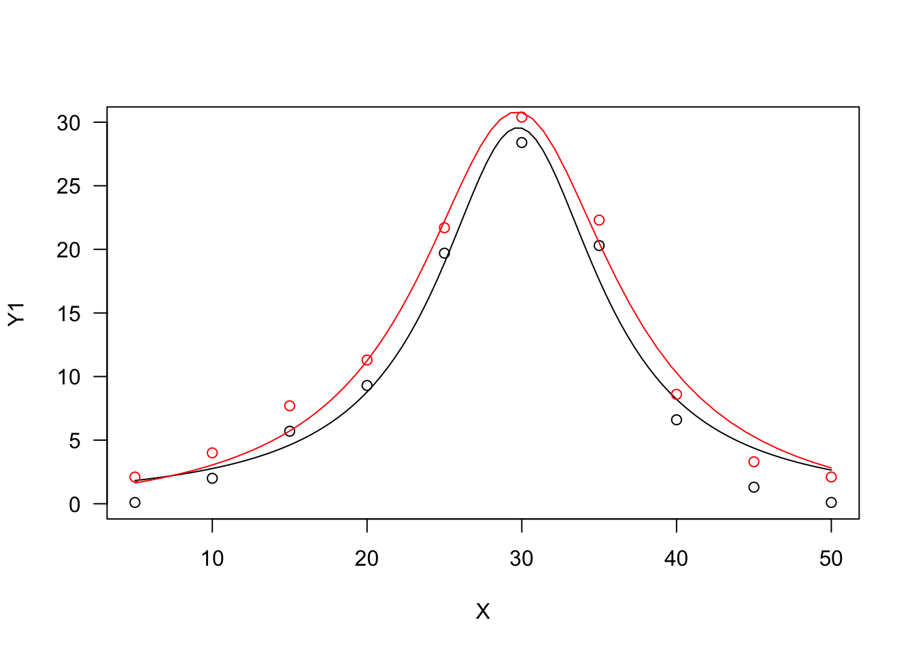
Beta function
The beta function derives from the beta density function and it has been adapted to describe phenomena taking place only within a minimum and a maximum threshold value (threshold model). One typical example is seed germination, where the germination rate (GR, i.e. the inverse of germination time) is 0 below the base temperature level and above the cutoff temperature level. Between these two extremes, the GR increases with temperature up to a maximum level, that is reached at the optimal temperature level.
The equation is:
\[ Y = d \,\left\{ \left( \frac{X - X_b}{X_o - X_b} \right) \left( \frac{X_c - X}{X_c - X_o} \right) ^ {\frac{X_c - X_o}{X_o - X_b}} \right\}^b \quad \quad \quad (23)\]
where \(d\) is the maximum level for the expected response \(Y\), \(X_b\) and \(X_c\) are, respectively, the minumum and maximum threshold levels, \(X_o\) is the abscissa at the maximum expected response level and \(b\) is a shape parameter. The above function is only defined for \(X_b < X < X_c\) and it returns 0 elsewhere.
In R, the beta function can be fitted either with ‘drm()’ and the self-starter DRC.beta(), or with ‘nls()’ and the self-starter NLS.beta(). Both the self-starters are available within the ‘statforbiology’ package.
X <- c(1, 5, 10, 15, 20, 25, 30, 35, 40, 45, 50)
Y <- c(0, 0, 0, 7.7, 12.3, 19.7, 22.4, 20.3, 6.6, 0, 0)
model <- nls(Y ~ NLS.beta(X, b, d, Xb, Xo, Xc))
model <- drm(Y ~ X, fct = DRC.beta())
summary(model)
Model fitted: Beta function
Parameter estimates:
Estimate Std. Error t-value p-value
b:(Intercept) 1.29834 0.26171 4.9609 0.0025498 **
d:(Intercept) 22.30117 0.53645 41.5715 1.296e-08 ***
Xb:(Intercept) 9.41770 1.15826 8.1309 0.0001859 ***
Xo:(Intercept) 31.14068 0.58044 53.6504 2.815e-09 ***
Xc:(Intercept) 40.47294 0.33000 122.6455 1.981e-11 ***
---
Signif. codes: 0 '***' 0.001 '**' 0.01 '*' 0.05 '.' 0.1 ' ' 1
Residual standard error:
0.7251948 (6 degrees of freedom)plot(model, log="", main = "Beta function")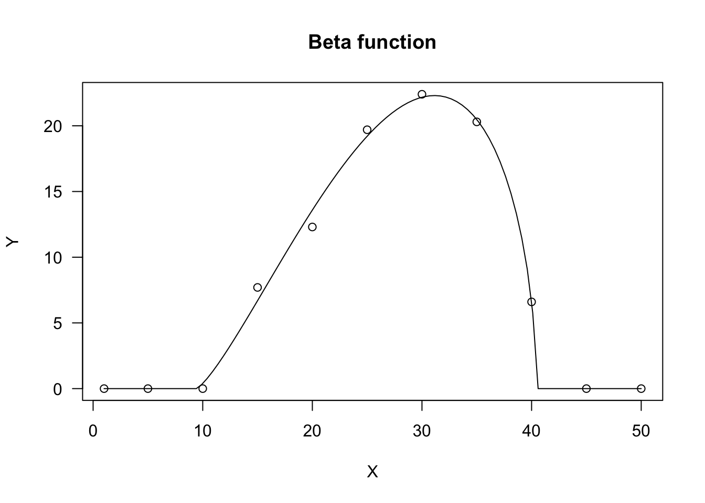
Here we are; I have discussed more than 20 models, which are commonly used for nonlinear regression. These models can be found in several different parameterisations and flavours; they can also be modified and combined to suit the needs of several disciplines in biology, chemistry and so on. However, this will require another post.
Thanks for reading! And … don’t forget to check out my new book!
Prof. Andrea Onofri
Department of Agricultural, Food and Environmental Sciences
University of Perugia (Italy)
Send comments to: andrea.onofri@unipg.it

Further readings
- Miguez, F., Archontoulis, S., Dokoohaki, H., Glaz, B., Yeater, K.M., 2018. Chapter 15: Nonlinear Regression Models and Applications, in: ACSESS Publications. American Society of Agronomy, Crop Science Society of America, and Soil Science Society of America, Inc.
- Ratkowsky, D.A., 1990. Handbook of nonlinear regression models. Marcel Dekker Inc., New York, USA.
- Ritz, C., Jensen, S. M., Gerhard, D., Streibig, J. C. (2019) Dose-Response Analysis Using R. CRC Press
Originally published in ‘The broken bridge between biologists and statisticians’ on 2020-02-26